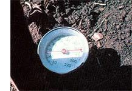

Using a soil thermometer can help insure germination .... You can harvest vitamin-rich carrots right up through Christmas .... Tasty Jerusalem artichokes will stay crisp all winter under their blanket of snow and soil.